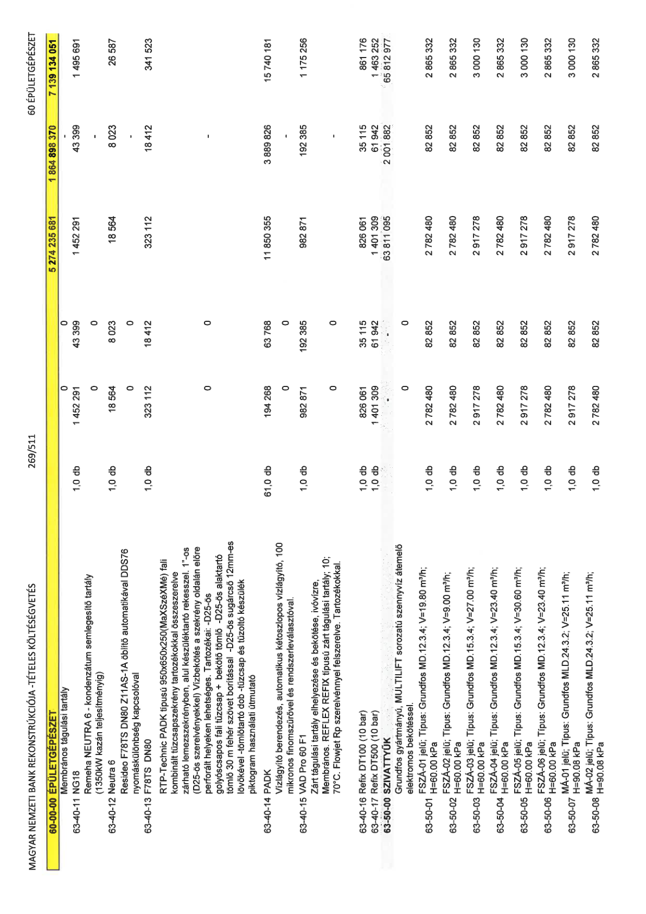

| Tétel | Menny. | Egys. | Anyag e.ár (net HUF) | Díj e.ár (net HUF) | Anyag összesen (net HUF) | Díj összesen (net HUF) | Anyag+Díj összesen (net HUF) |
|---|---|---|---|---|---|---|---|
| 60-00-00 ÉPÜLETGÉPÉSZET | NaN | NaN | 0 | 0 | 5 274 235 681 | 1 864 898 370 | 7 139 134 051 |
| Membrános tágulási tartály | 0 | 0 | 0 | 0 | 0 | 0 | 0 |
| 63-40-11 NG18 | 1,0 | db | 1 452 291 | 43 399 | 1 452 291 | 43 399 | 1 495 691 |
| Remeha NEUTRA 6 - kondenzátum semlegesítő tartály (1350kW kazán teljesítményig) | 0 | 0 | 0 | 0 | 0 | 0 | 0 |
| 63-40-12 Neutra 6 | 1,0 | db | 18 564 | 8 023 | 18 564 | 8 023 | 26 587 |
| Resideo F78TS DN80 Z11AS-1A öblítő automatikával DDS76 nyomáskülönbség kapcsolóval | 0 | 0 | 0 | 0 | 0 | 0 | 0 |
| 63-40-13 F78TS DN80 | 1,0 | db | 323 112 | 18 412 | 323 112 | 18 412 | 341 523 |
| RTP-Technic PADK típusú 950x650x250(MaXSzéXMé) fali kombinált tűzcsapszekrény tartozékokkal összeszerelve zárható lemezszekrényben, alul készüléktartó rekesszel. 1”-os (D25-ös szerelvényekkel) Vízbekötés a szekrény oldalán előre perforált helyeken lehetséges. Tartozékai: -D25-ös golyóscsapos fali tűzcsap + bekötő töml -D25-ös alaktartó tömlő 30 m fehér szövet borítással -D25-ös sugárcső 12mm-es lövőkével -tömlőtartó dob -tűzcsap és tűzoltó készülék piktogram használati útmutató | 0 | 0 | 0 | 0 | 0 | 0 | 0 |
| 63-40-14 PADK | 61,0 | db | 194 268 | 63 768 | 11 850 355 | 3 889 826 | 15 740 181 |
| Vízlágyító berendezés, automatikus kétoszlopos vízlágyító, 100 mikronos finomszűrővel és rendszerleválasztóval. | 0 | 0 | 0 | 0 | 0 | 0 | 0 |
| 63-40-15 VAD Pro 60 F1 | 1,0 | db | 982 871 | 192 385 | 982 871 | 192 385 | 1 175 256 |
| Zárt tágulási tartály elhelyezése és bekötése, ivóvízre, Membrános. REFLEX REFIX típusú zárt tágulási tartály; 10; 70°C. Flowjet Rp szerelvénnyel felszerelve. Tartozékokkal. | 0 | 0 | 0 | 0 | 0 | 0 | 0 |
| 63-40-16 Refix DT100 (10 bar) | 1,0 | db | 826 061 | 35 115 | 826 061 | 35 115 | 861 176 |
| 63-40-17 Refix DT500 (10 bar) | 1,0 | db | 1 401 309 | 61 942 | 1 401 309 | 61 942 | 1 463 252 |
| 63-50-00 SZIVATTYÚK | NaN | NaN | 0 | 0 | 63 811 095 | 2 001 882 | 65 812 977 |
| Grundfos gyártmányú, MULTILIFT sorozatú szennyvíz átemelő elektromos bekötéssel. | 0 | 0 | 0 | 0 | 0 | 0 | 0 |
| 63-50-01 FSZÁ-01 jelű; Típus: Grundfos MD.12.3.4; V=19.80 m³/h; H=60.00 kPa | 1,0 | db | 2 782 480 | 82 852 | 2 782 480 | 82 852 | 2 865 332 |
| 63-50-02 FSZÁ-02 jelű; Típus: Grundfos MD.12.3.4; V=9.00 m³/h; H=60.00 kPa | 1,0 | db | 2 782 480 | 82 852 | 2 782 480 | 82 852 | 2 865 332 |
| 63-50-03 FSZÁ-03 jelű; Típus: Grundfos MD.15.3.4; V=27.00 m³/h; H=60.00 kPa | 1,0 | db | 2 917 278 | 82 852 | 2 917 278 | 82 852 | 3 000 130 |
| 63-50-04 FSZÁ-04 jelű; Típus: Grundfos MD.12.3.4; V=23.40 m³/h; H=60.00 kPa | 1,0 | db | 2 782 480 | 82 852 | 2 782 480 | 82 852 | 2 865 332 |
| 63-50-05 FSZÁ-05 jelű; Típus: Grundfos MD.15.3.4; V=30.60 m³/h; H=60.00 kPa | 1,0 | db | 2 917 278 | 82 852 | 2 917 278 | 82 852 | 3 000 130 |
| 63-50-06 FSZÁ-06 jelű; Típus: Grundfos MD.12.3.4; V=23.40 m³/h; H=60.00 kPa | 1,0 | db | 2 782 480 | 82 852 | 2 782 480 | 82 852 | 2 865 332 |
| 63-50-07 MÁ-01 jelű; Típus: Grundfos MLD.24.3.2; V=25.11 m³/h; H=90.08 kPa | 1,0 | db | 2 917 278 | 82 852 | 2 917 278 | 82 852 | 3 000 130 |
| 63-50-08 MÁ-02 jelű; Típus: Grundfos MLD.24.3.2; V=25.11 m³/h; H=90.08 kPa | 1,0 | db | 2 782 480 | 82 852 | 2 782 480 | 82 852 | 2 865 332 |
